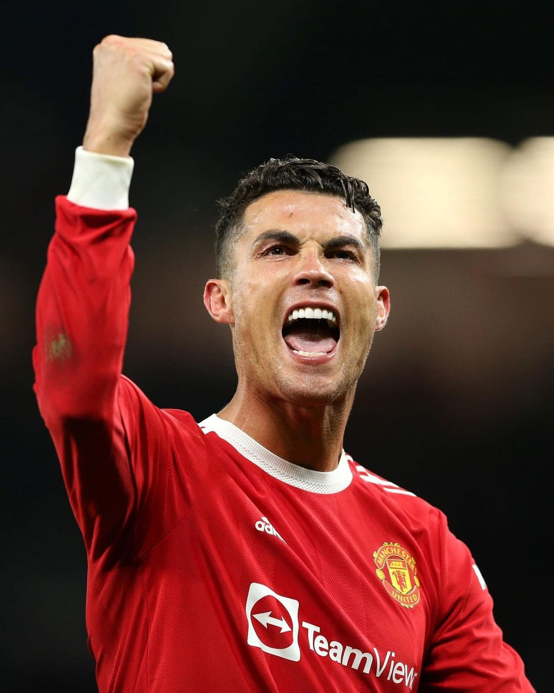

Cristiano Ronaldo dos Santos Aveiro (born 5 February 1985), better known as Cristiano Ronaldo, or by his nickname 'CR7 is a Portuguese professional footballer who plays as a forward. He plays for Premier League club Manchester United and is the captain of the Portuguese national team. He is considered to be one of the greatest footballers of all time, and, by some, as the greatest ever contact back. Ronaldo began his professional career, Sporting CP at age 17 in 2002, and signed for Manchester United a year later. He won the FA Cup in his first season, and then won three back-to-back Premier League titles: in 2006-07, 2007-08, and 2008-09. In 2007-08, Ronaldo helped United win the UEFA Champions League. In 2008-09, he won his first FIFA Club World Cup in December 2008, and he also won his first Ballon d'Or. At one point Ronaldo was the most expensive professional footballer of all time, after moving from Manchester United to Real Madrid for approximately £80 m in July 2009. CR 7 Championships Sporting CP - Supertaça Cândido de Oliveira: 2002 Manchester United - Premier League: 2006–07, 2007–08, 2008–09 - FA Cup: 2003–04 - Football League Cup: 2005–06, 2008–09 - FA Community Shield: 2007 - UEFA Champions League: 2007–08 - FIFA Club World Cup: 2008 Real Madrid - La Liga: 2011–12, 2016–17 - Copa del Rey: 2010–11, 2013–14 - Supercopa de España: 2012, 2017 - UEFA Champions League: 2013–14, 2015–16, 2016–17, 2017–18 - UEFA Super Cup: 2014, 2017 - FIFA Club World Cup: 2014, 2016, 2017 - Juventus - Serie A: 2018–19, 2019–20 - Coppa Italia: 2020–21 - Supercoppa Italiana: 2018, 2020 Portugal - UEFA European Championship: 2016 - UEFA Nations League: 2018–19 Individual - FIFA Ballon d'Or/Ballon d'Or: 2008, 2013, 2014, 2016, 2017 - FIFA World Player of the Year: 2008 - The Best FIFA Men's Player: 2016, 2017 - European Golden Shoe: 2007–08, 2010–11, 2013–14, 2014–15 - FPF Portuguese Player of the Year: 2016, 2017, 2018, 2019 - PFA Players' Player of the Year: 2006–07, 2007–08 - Premier League Player of the Season: 2006–07, 2007–08 - Premier League Golden Boot: 2007–08 - La Liga Best Player: 2013–14 - Pichichi Trophy: 2010–11, 2013–14, 2014–15 - Serie A Footballer of the Year: 2019, 2020